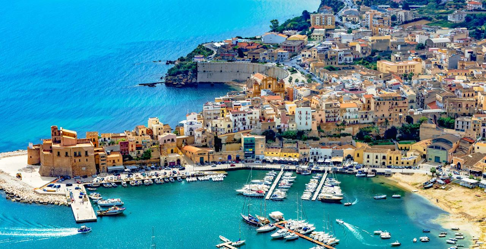
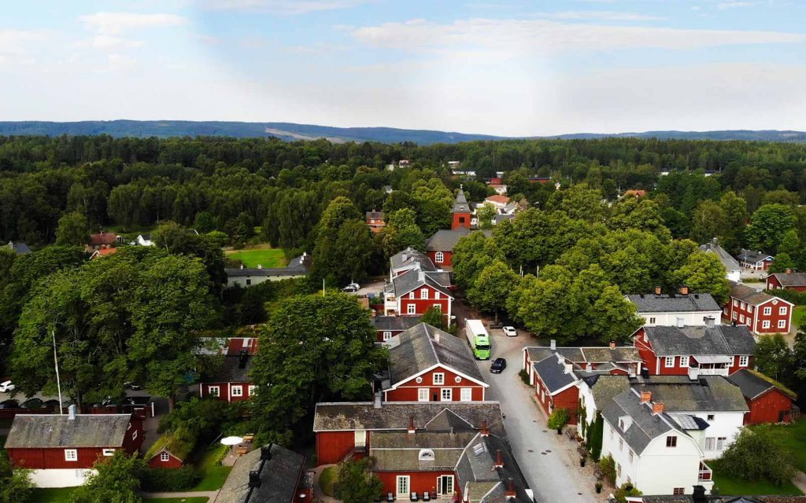
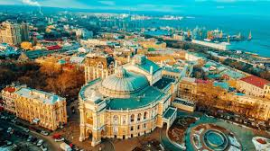
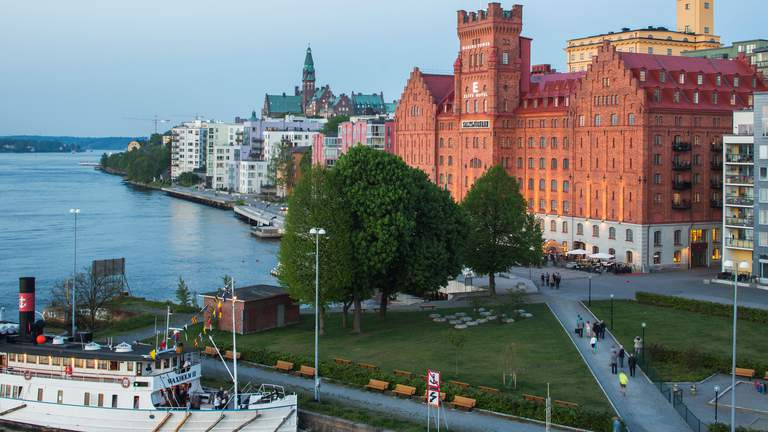
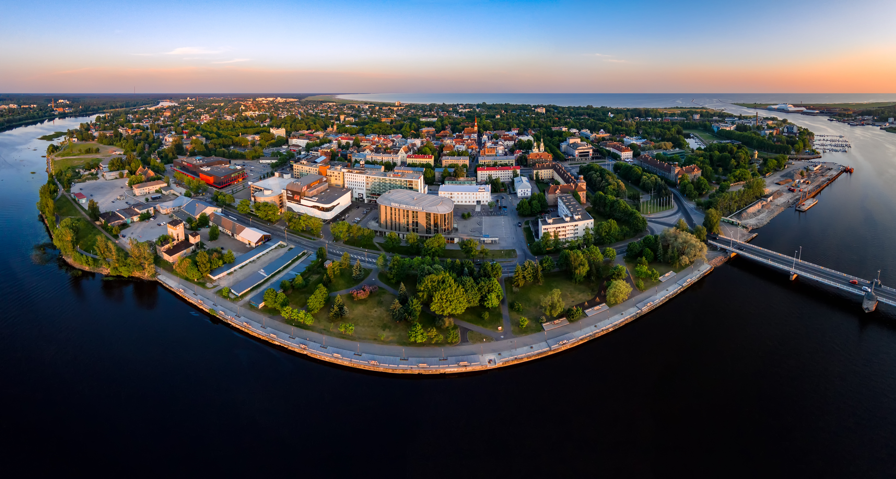

Alkāmo (Alcamo), Itālija
Sadraudzības līgums noslēgts 2002. gada 26. jūlijā Alkāmo. Līgumu parakstīja Jelgavas pilsētas domes priekšsēdētājs Andris Rāviņš un Alkāmo pilsētas tā brīža mērs Džakomo Skata

Hellefoša (Hallefors), Zviedrija
Sadraudzības līgums noslēgts 2004. gada 5. aprīlī...

Novaodesa (Novu Odessa), Brazīlija
Nodomu protokols noslēgts 2007. gada 10. jūnijā, paredzot sadarbību daudzās jomās, tostarp arī sniedzot atbalstu organizācijām, uzņēmumiem, valsts iestādēm un veicinot abu valstu kultūras un vēstures izpratni.

Naka (Zviedrija)
Sadraudzības līgums noslēgts 2000. gadu sākumā, paredzot pieredzes apmaiņu pašvaldības, vides, izglītības, kultūras, sporta, atkarības vielu profilakses jomā.

Pērnava (Parnu), Igaunija
Pērnavas un Jelgavas attiecības aizsākās jau 1957. gadā, un sadarbība kultūras jomā ir visintensīvākā.
Sjiņjina (Hsin Ying), Taivāna
Sadraudzības līgums noslēgts 2000. gada 2. aprīlī. Līgumu parakstījis Jelgavas pilsētas domes priekšsēdētājs Uldis Ivans un Sjiņjinas pilsētas mērs Čens Čings, paredzot sadarbību mākslas un kultūras jomā.